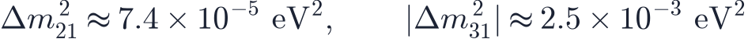
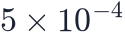
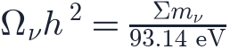
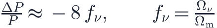
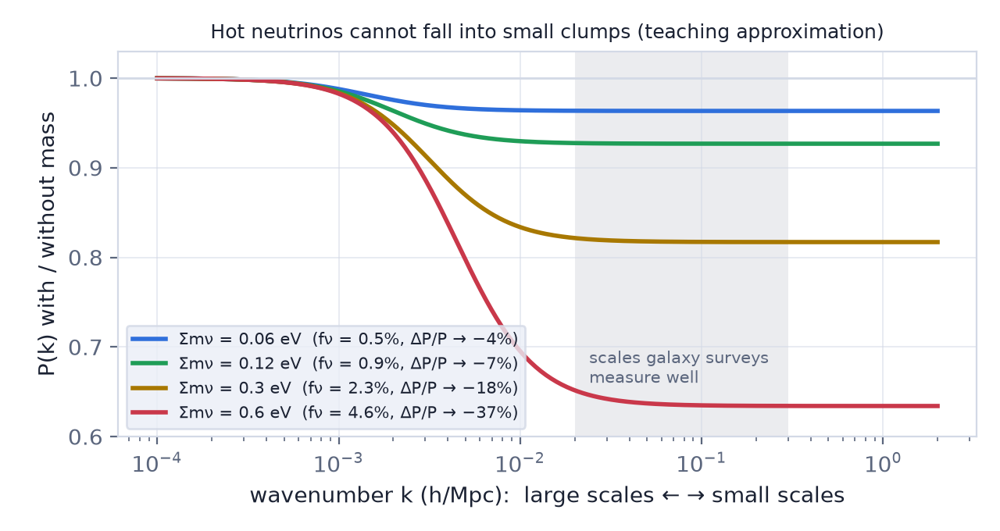
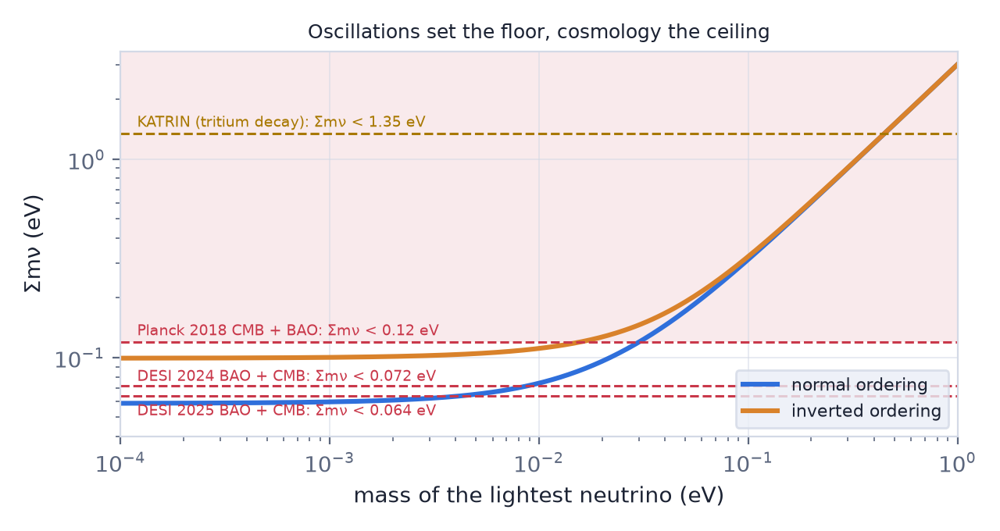
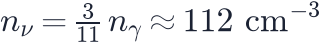
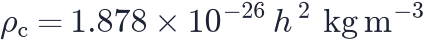

In this lesson you will learn
|
A particle that was supposed to be massless
The Standard Model of particle physics was built with massless neutrinos. Then, in 1998, the Super-Kamiokande detector saw that muon neutrinos made in the atmosphere arrive in smaller numbers from below — after crossing the Earth — than from above. They had not disappeared; they had turned into another flavour on the way.
This oscillation can only happen if the three flavours are mixtures of states with different masses. The oscillation rate depends on the difference of the squared masses, so experiments measure two numbers:

Differences, not masses. Oscillations know how far apart the rungs of the ladder are, but not how high the ladder stands.
The floor: two possible orderings
We do not even know the order of the masses. Two arrangements fit the data — the mass orderings:
- Normal ordering: two light states close together and a third, heavier one.
- Inverted ordering: two heavier states close together and one light one.
Setting the lightest mass to zero gives the smallest possible sum of the three masses:
A guaranteed target The sum cannot be smaller than about 0.06 eV. That is a firm prediction: a cosmological measurement that finds less than this would mean something in our understanding of neutrinos or of cosmology is wrong. |
The laboratory tries to weigh neutrinos directly. The KATRIN experiment measures the energy spectrum of electrons from tritium decay, where a neutrino mass would steal a little energy from the end of the spectrum. Its limit, about 0.45 eV for the effective mass, is still far above the floor.
Relic neutrinos with mass are matter
The cosmic neutrino background of lesson L4.5 contains about 112 neutrinos per cubic centimetre for each flavour — around 340 in every cubic centimetre of the universe, including the one you are sitting in. At decoupling they were ultra-relativistic, behaving like radiation. But their temperature is only 1.95 K today, corresponding to energies of about

eV, so any neutrino heavier than that has long since slowed down and now behaves like matter.Their density follows from counting them:

For the minimum sum, : about 0.5% of all the matter. Small — but cosmology now measures matter to better than that.
Neutrinos are hot dark matter Relic neutrinos are dark, and they are matter. Early in the history of the subject they were even proposed as the dark matter. They cannot be: they move far too fast to be caught by small clumps, so a universe full of them would never form galaxies in the right way. Cold dark matter does that job, and neutrinos are a small hot admixture. |
Free streaming: why mass leaves a mark on structure
A neutrino with eV became non-relativistic only at a redshift of about 100, and even today it moves at thousands of kilometres per second. Over the history of the universe it travels hundreds of megaparsecs. Any overdensity smaller than that free-streaming length is simply crossed and left behind: neutrinos refuse to fall into small clumps. This is free streaming.
The consequence is subtle and measurable. On large scales neutrinos cluster like everything else. On small scales their share of the matter stays smooth, so the gravity pulling structures together is weaker, and structures grow more slowly. The matter power spectrum (lesson L5.4) is suppressed on small scales by roughly


Even the minimum mass lowers the small-scale power by about 4%. Galaxy surveys, weak lensing and the lensing of the CMB are all sensitive to it.
Try it: 2D N-body Structure Formation Compare cold and warm dark matter with the same seed. Warm particles erase the smallest structures the same way hot neutrinos do, only far more strongly. |
The ceiling: what cosmology measures
Cosmology constrains the sum through two effects at once: neutrino mass changes the expansion history (it is extra matter today but was radiation early on) and it suppresses the growth of structure. Combining the CMB, which fixes the early universe, with late-time distances from baryon acoustic oscillations gives the tightest limits:
| Measurement | 95% limit on Σmν |
|---|---|
| Planck 2018 CMB + BAO | < 0.12 eV |
| DESI 2024 BAO + CMB | < 0.072 eV |
| DESI 2025 BAO + CMB | < 0.064 eV |

Floor meets ceiling The inverted ordering needs at least 0.099 eV; current cosmological limits already disfavour it. Even the normal ordering, with its 0.059 eV floor, now sits right at the edge of what DESI allows. There are three readings: the true sum is very close to the minimum and a detection is imminent; dark energy is not a simple cosmological constant, which changes the inferred limit (DESI itself hints at evolving dark energy); or some systematic error in the combined data. Which one it is will be one of the big results of the coming decade. |
Where 93.14 eV comes from The number density of one relic species (neutrinos plus antineutrinos) is  . The mass density is ; dividing by the critical density gives . |
Try it: Build Your Own Universe Raise the neutrino mass to 0.5 eV while keeping the total matter density fixed by lowering the cold dark matter. Which test on the report card fails, and why would galaxies notice? |
Remember this
|